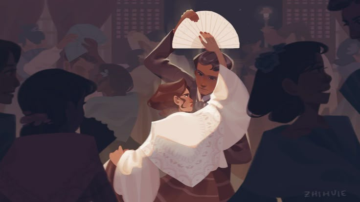

Pride and Prejudice

Photo by Amanda @zhihuie
‘Or, in other words, you are determined to have him. He is rich, to be sure, and you may have more fine clothes and fine carriages than Jane. But will they make you happy?’
‘Have you any other objection,’ said Elizabeth, ‘than your belief of my indifference?’
‘None at all. We all know him to be a proud, unpleasant sort of man; but this would be nothing if you really liked him.’
‘I do, I do like him,’ she replied, with tears in her eyes, ‘I love him. Indeed he has no improper pride. He is perfectly amiable. You do not know what he really is; then pray do not pain me by speaking of him in such terms.’
‘Lizzy,’ said her father, ‘I have given him my consent. He is the kind of man, indeed, to whom I should never dare refuse anything, which he condescended to ask. I now give it to YOU, if you are resolved on having him. But let me advise you to think better of it. I know your disposition, Lizzy. I know that you could be neither happy nor respectable, unless you truly esteemed your husband; unless you looked up to him as a superior. Your lively talents would place you in the greatest danger in an unequal marriage. You could scarcely escape discredit and misery. My child, let me not have the grief of seeing YOU unable to respect your partner in life. You know not what you are about.